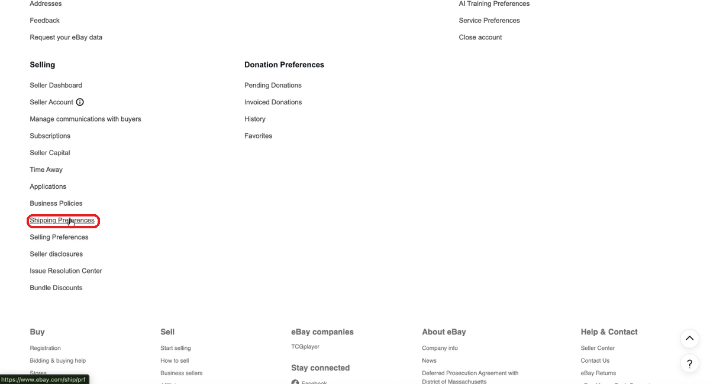
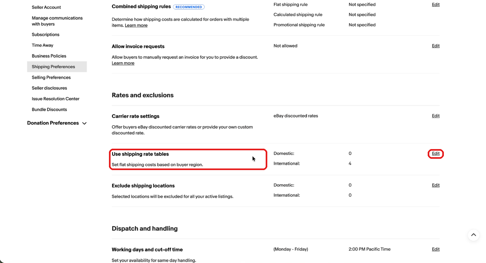
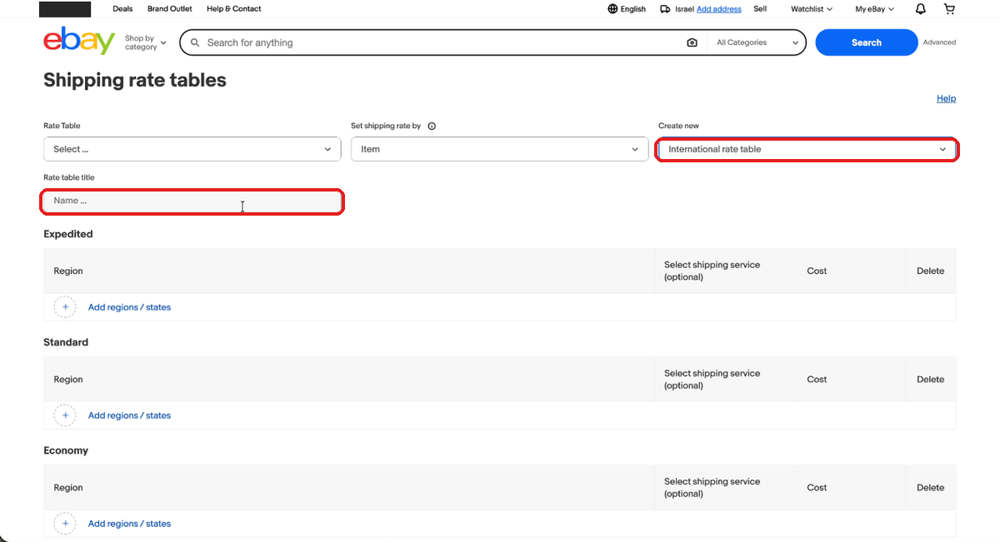
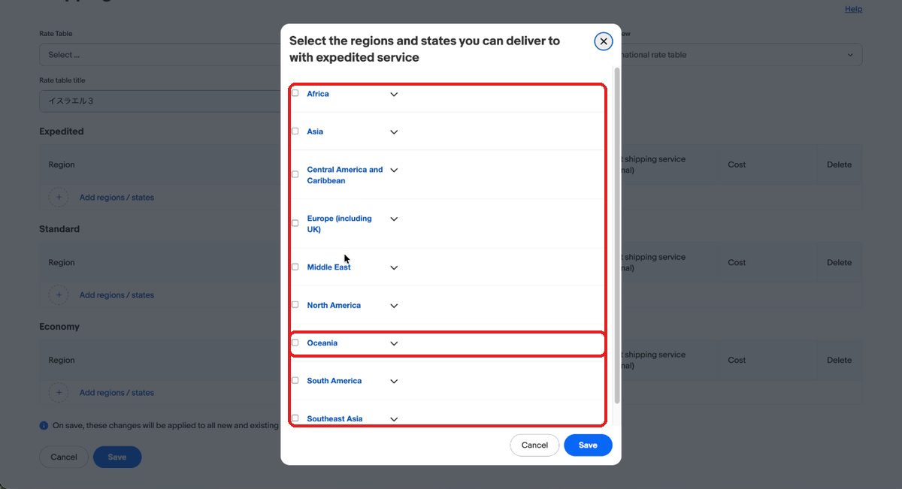
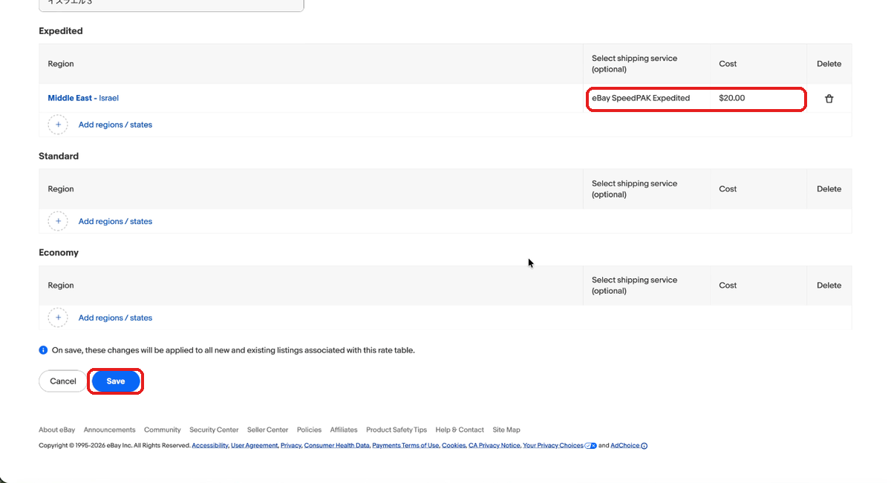
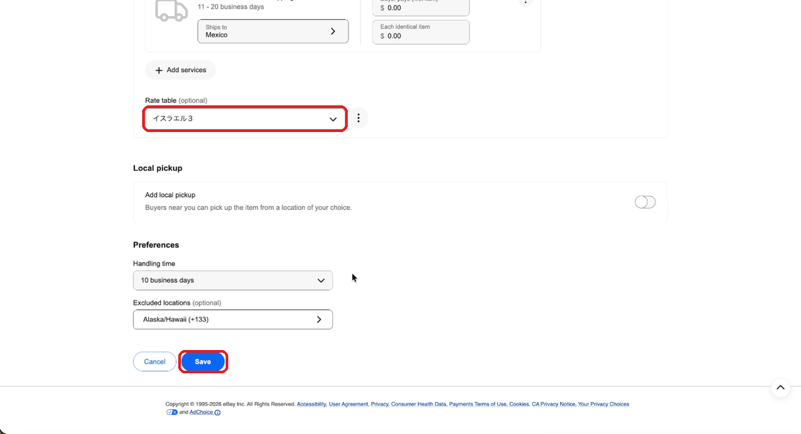
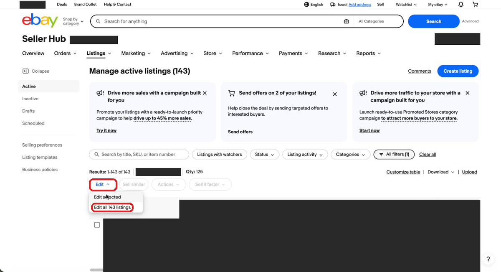
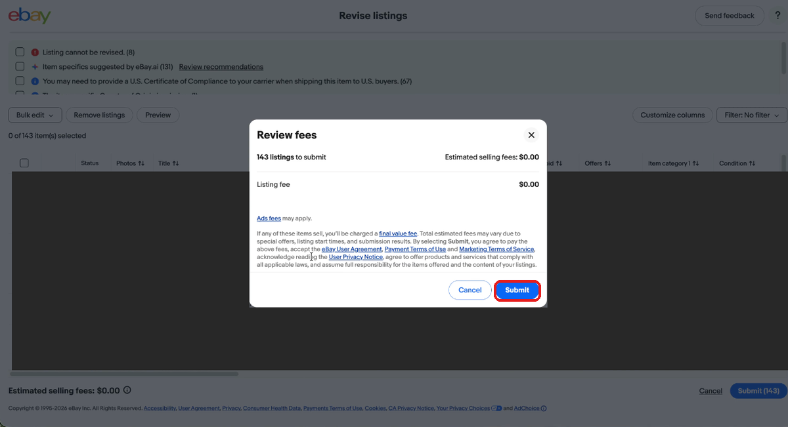
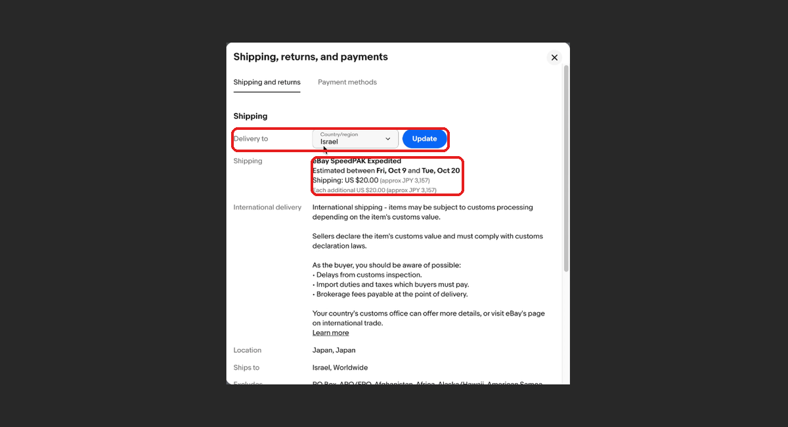

ポリシーの送り先にない国へ送れるようにする方法（レートテーブル）｜例：ニュージーランド
レートテーブル（国別の送料表）を使います。1つずつ順番にやれば大丈夫です。
こんな症状のとき
- 買う人が配送先に「ニュージーランド」を選ぶと、送料が出ません。
- 「配送方法は出品者にお問い合わせください（Contact seller）」と出て、買えません。
- でも、ニュージーランドは除外国には入っていません。
2026年10月21日に、シッピングポリシーを変更しました。これは、eBaymag（マグ）で同期すると、ヨーロッパ向けの追加送料が$0になってしまう問題への対応です。
このとき、国際配送の送り先を「Worldwide」から、「Americas・Asia・オーストラリア・メキシコ」などの指定に置き換えました。
ところが、シッピングポリシーでは「Oceania（オセアニア）」もニュージーランドも、送り先に指定できません（eBayが受け付けません）。そのため、ニュージーランドだけが送り先から外れてしまいました。
シッピングポリシーを変えても、直りません。
代わりに、レートテーブル（国別の送料表）で設定します。
この方法は、実際にイスラエル宛てで確かめ済みです。
この手順の画面は、イスラエル宛てに設定したときの例です。ニュージーランドの場合は、国の選び方だけが変わります（手順4を見てください）。赤い枠は、押す場所です。
Account Settings で Shipping Preferences を開く
を開き、 の欄にある をおします。

「Use shipping rate tables」の Edit をおす
開いた画面の の中に、 の行があります。右の をおします。

新しいテーブルを作る（Shipping rate tables 画面）
の画面が開きます。次のとおりに選びます。
- は
- は
- に、わかりやすい名前を入れます。

配送の区分ごとに、国を選ぶ
下に / / の3つの欄があります。このうち、自分が使っているものの をおして、地域の一覧から国を選びます。
説明動画の例：クーリエ（xp）のポリシー用に Expedited を選び、Middle East の中の Israel を選んでいます。
ニュージーランドなら、一覧の Oceania を開いて、その中の New Zealand を選びます。
エコノミー系のポリシーで Economy を選ぶかどうかは、ご自身のポリシーの配送方法に合わせてください。

配送サービスと送料を入れて、Save をおす
（任意）でサービスを選びます（動画では です）。
に送料の金額を入れて、 をおします。
動画では「コストは差額だけでいい」と説明しています。
Save の上に、画面でこう表示されます。
「On save, these changes will be applied to all new and existing listings associated with this rate table.」
（保存すると、このテーブルを使う新しい出品と既存の出品に、変更が適用されます）

シッピングポリシーに、作ったテーブルを選ぶ
で、対象のシッピングポリシーを開いて編集します（）。
国際配送の下にある で、作ったテーブルを選んで、 をおします。
狙ったポリシーだけでもかまいません。

出品を更新する（その1）出品一覧で Edit をおす
Seller Hub の （出品一覧）で、そのポリシーを使っている出品だけを表示します。
をおして、 か （○○は件数）を選びます。
対象の出品だけでもかまいません。その場合は、出品にチェックを入れて を選びます。

出品を更新する（その2）Submit をおす
の画面になります。何も変えずに、画面下の をおします。
が出たら、もう一度 をおします。
レートテーブルは、出品を更新（Revise）しないと反映されません（社内で実際に測った結果です）。

販売ページで確かめる
販売ページを開き、送料や配送先の欄（）で、 の国を選びます（例：イスラエル）。
送料が出れば、できあがりです。ニュージーランドなら、国に「New Zealand」を選んで確かめます。

- レートテーブルは、アカウントごとに作ります。EAGLEの同期では配られません。
- 送りたくない国は、今までどおり除外（exclusion）で止めます。レートテーブルは、除外を上書きしません。
- 公式ヘルプには、次のことが書かれています。
- 作ったあとで、テーブルの種類は変えられません。
- 無料にしたいときは、空欄ではなく $0 を入れます。
説明動画（イスラエル宛てに送料を上乗せする例）：
Vimeo の説明動画を見る
公式ヘルプ（eBay）：
Using shipping rate tables